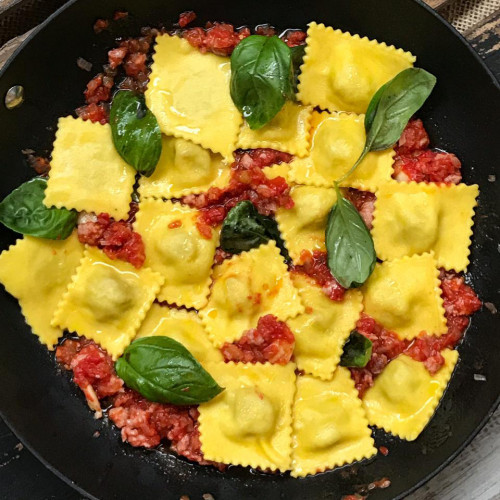

Paste Ravioli

Description
The ravioli recipe is often passed down from generation to generation. Each family has its secrets and unique flavors to achieve the exquisite pasta. In this edition of the recipe book we approach the step by step to achieve delicious homemade vegetable ravioli, ideal to share with affection or eat alone and with a delicious wine.
Ingredients
- 650 gr common flour
- 1 pinch salt
- 3 tbsp. oil
- 2 tbsp. vinegar
- 3 eggs
- 2 bundles boiled chard
- 1 chopped onion
Steps
-
WFirst prepare the filling: use the chard leaves (keep the leaves for making pies, milanesas, tempura, soup). Drain the chard well and process it and reserve. Sauté the onion in oil, add the chard and cook for a little while. Add seasonings and flavoring.
-
Add the can of hash, mix well, cook a little until everything is combined, remove from the heat and immediately add the egg and mix. If we see that it is not very thick due to the water from the chard, add breadcrumbs, this makes it thick. Cool.
-
For the dough, make a hole with the flour, incorporate all the other ingredients in the center and form the dough that does not have to be very soft, it is better hard. Stretch thin in a rectangular shape. Spread it with the filling and cover with another layer of dough. Then mark it with the ravioli marker and cut them with the ravioli cutter.
-
Boil a pot with plenty of salted water, place the ravioli and cook after it boils for 10'. Strain and serve with sauce to taste.